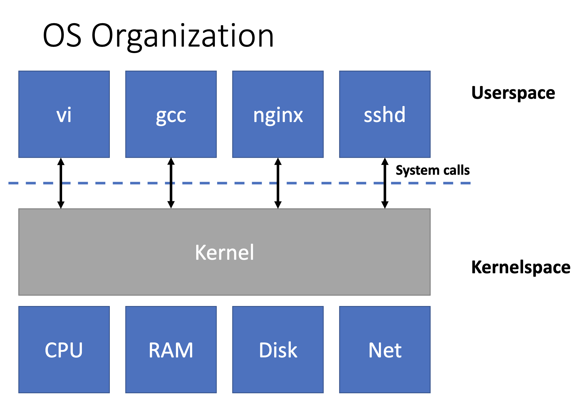

什么是系统调用
操作系统接口，由操作系统实现，供用户程序调用。
为什么要使用系统调用/操作系统的目的
- 抽象
- 隐藏硬件细节以提高便携性和便利性
- 不得妨碍高性能
- 必须支持广泛的应用程序
- 复用
- 允许多个应用程序共享硬件
- 隔离以包含错误并提供安全性
- 共享以允许程序协作
- ···
例子：往列表里append数据时（即在一段内存空间中写连续数据），不会覆盖到其他程序的内存。我在使用打印机打印报销单时，面试官在打印候选人简历，我的报销单不会出现教育经历。
系统调用提供了分层结构

操作系统为我们实现了什么
- Process（一个正在运行的程序）
- 内存分配
- 文件描述符
- 文件名和目录
- 访问控制和配额
- 许多其他：用户、IPC、网络套接字、时间等。
常见的系统调用与例子。

if __name__ == "__main__": with open("./syscall.md", "r") as fd: print(fd.read())
系统调用源码
注：xv6内核源码，基于RISC-V精简指令集。
用户空间 -> sys_getpid()
uint64 sys_getpid(void) { return myproc()->pid; }
sys_getpid() -> myproc()
struct proc* myproc(void) { push_off(); struct cpu *c = mycpu(); struct proc *p = c->proc; pop_off(); return p; }
myproc() -> mycpu()
struct cpu* mycpu(void) { int id = cpuid(); struct cpu *c = &cpus[id]; return c; }
mycpu() -> cpuid()
int cpuid() { int id = r_tp(); return id; }
cpuid() -> r_tp()
static inline uint64 r_tp() { uint64 x; asm volatile("mv %0, tp" : "=r"(x)); // 内嵌汇编 return x; }
r_tp() -> 汇编读寄存器
1.用户空间->汇编读寄存器，系统调用封装了硬件。
2.struct cpu， struct proc，struct cpu cpus[num_of_core]，内核抽象了硬件。
高度抽象、通用
文件描述符
文件描述符是一个小整数（0，1，2），表示进程可以读取或写入的内核管理对象。
进程可以通过打开文件、目录或设备，或通过创建管道，或通过复制现有描述符来获取文件描述符。
尽管往我们把文件描述符叫做“文件”，文件描述符还可以描述硬件、pipes。
文件描述符接口抽象出文件、pipes和硬件设备（如打印机）之间的差异，使它们看起来都像字节流。
简单使用
按照惯例，进程从文件描述符 0（标准输入流）读取，将输出写入文件描述符 1（标准输出流），并将错误消息写入文件描述符 2（标准错误流）。
open，read，write
echo源码
int main(int argc, char *argv[]) { int i; for(i = 1; i < argc; i++){ write(1, argv[i], strlen(argv[i])); // 将参数(argv[i])写入标准输出流(1) if(i + 1 < argc){ write(1, " ", 1); } else { write(1, "\n", 1); } } exit(0); }
cat源码
void cat(int fd) { int n; while((n = read(fd, buf, sizeof(buf))) > 0) { // 读文件描述符fd if (write(1, buf, n) != n) { // 写入标准输出流(1) fprintf(2, "cat: write error\n"); exit(1); } } if(n < 0){ fprintf(2, "cat: read error\n"); exit(1); } } int main(int argc, char *argv[]) { int fd, i; if(argc <= 1){ cat(0); exit(0); } for(i = 1; i < argc; i++){ if((fd = open(argv[i], 0)) < 0){ // 使用open，打开参数中的文件，返回文件描述符fd fprintf(2, "cat: cannot open %s\n", argv[i]); exit(1); } cat(fd); // 将文件描述符传入cat close(fd); // 关闭描述符fd } exit(0); }
进程
进程是什么
fork()系统调用使用
fork为新进程提供与调用进程完全相同的内存内容（指令和数据）。
fork在原始进程和新进程中都返回。
在原进程中，fork 返回新进程的PID。
在新进程中，fork 返回0。
原始进程和新进程通常称为父进程和子进程。
int main(int argc, char *argv[]) { int pid = fork(); if (pid > 0) { printf("parent\n"); } else if (pid == 0) { printf("child\n"); } else { printf("fork error\n"); } exit(0); }
exec()系统调用使用
exec系统调用将调用进程的内存替换为新内存映像并执行。
新内存对象是从文件系统中加载的。
int main() { char *argv[] = {"echo", "hello", "world", 0}; exec("echo", argv); printf("exec fail\n"); exit(0); }
int main() { char *argv[] = {"abc", "hello", "world", 0}; exec("abc", argv); printf("exec fail\n"); exit(0); }
结合使用
I/O重定向
int main() { char *argv[] = {"echo", "hello", "world", 0}; close(1); // 关闭标准输出流(1) if (open("output.txt", O_CREATE | O_RDWR) < 0) // 创建并打开一个文件，替换标准输出流(1) printf("open fail\n"); exec("echo", argv); printf("exec fail\n"); exit(0); }
复杂使用--sh
sh源代码
··· while(getcmd(buf, sizeof(buf)) >= 0){ // 循环：读命令至buf中 ··· if(fork1() == 0) // 创建子进程，在子进程中继续 runcmd(parsecmd(buf)); // 解析buf，执行命令 ··· } ··· void runcmd(struct cmd *cmd) { ··· switch (cmd->type) { default: panic("runcmd"); case EXEC: ecmd = (struct execcmd *)cmd; ··· exec(ecmd->argv[0], ecmd->argv); ··· case REDIR: rcmd = (struct redircmd *)cmd; close(rcmd->fd); if (open(rcmd->file, rcmd->mode) < 0) // 重定向I/O { ··· exit(1); } runcmd(rcmd->cmd); break; ··· case PIPE: ··· ··· }